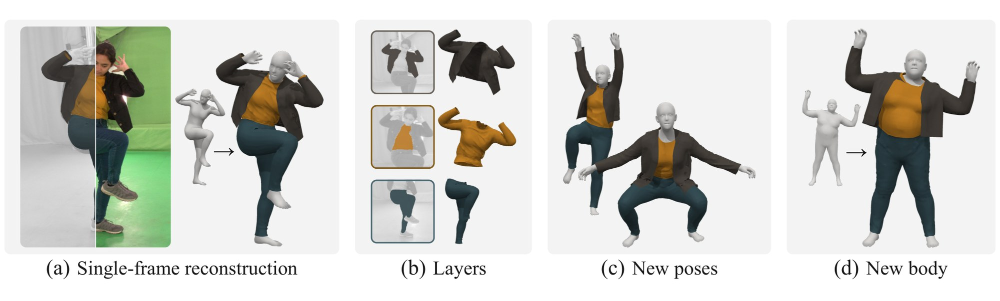
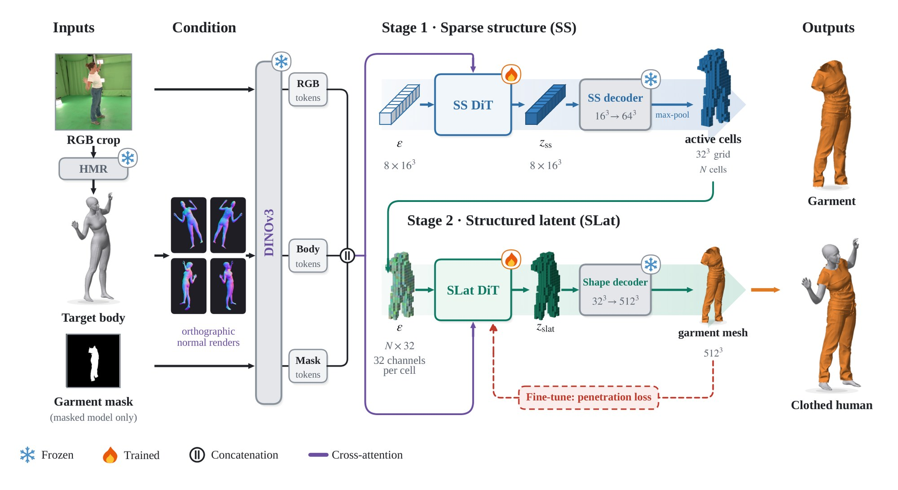
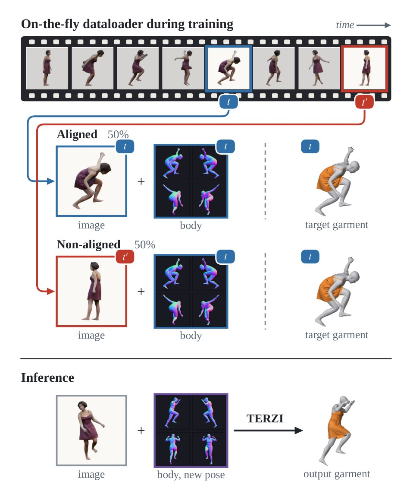
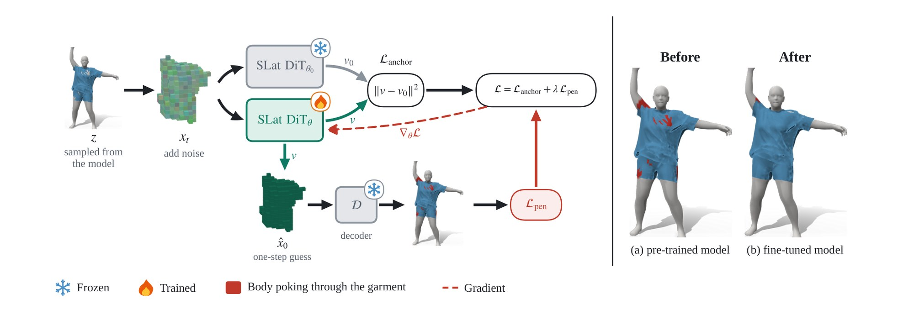

TERZI
Three-dimensional Garment Generation and Retargeting via Optimization-free Inference
Imperial College London

Overview Video
4D-DRESS
Drag across each image: to the left, the photo; to the right, our garments rendered through the photo's camera.
Real videos, frame by frame
Each clip: the input frame, then our garments on the body, seen from the camera.
Videos from Pexels.
Retargeting
Keeping the image and masks fixed, the same garments are generated directly on the body in new poses, and on target bodies with a different shape and pose, without explicit training for cross-body transfer.
One photo and its garment masks; the garments generated on the same person's body in other poses.
Masked model. One photo of a size-L outfit; the same outfit generated on other people in other poses, from size M to 6XL.
Against the baselines
Garments colored by distance to the scan's garments (0–5 cm); numbers: each method's per-frame chamfer distance from the paper's evaluation (segmentation protocol). Ours: the masked model.
HumanNOVA and TRELLIS.2 return one surface that fuses body and clothes; TERZI returns the garments as separate meshes on the body. No temporal smoothing for any method.
Garment normals on real photos
No 3D ground truth exists here, so each method is rendered in its own image space and compared with Sapiens2 pseudo-ground-truth normals on the clothing it covers. Numbers: mean angle to the pseudo ground truth.
Method



Results
| Segmentation | GT label transfer | |||||
|---|---|---|---|---|---|---|
| Method | CD ↓ | NC ↑ | F@1 ↑ | CD ↓ | NC ↑ | F@1 ↑ |